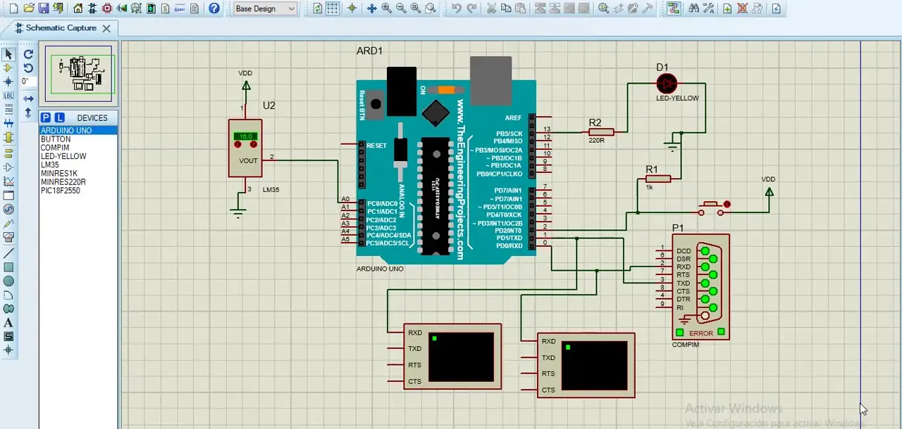

Es el mismo montaje del video anterior (sensor, interruptor y ESP8266 por COMPIM) con un LED en el pin 13, que se configura como salida en el setup.
#define suiche 2
#define led_out 13
// ...
pinMode(led_out, OUTPUT);Sobre el programa de monitoreo con ESP8266 y Ubidots se agrega una salida: un LED en el pin 13 que se controla desde un botón del tablero. Se reutiliza la rutina de lectura de la versión con PIC, cambiando lo que no existe en Arduino: UART1_Data_Ready pasa a Serial.available(), UART1_Read a Serial.read(), y la bandera RCIF no se limpia porque Arduino maneja el búfer solo. Después del POST con las variables se envía un GET por la última lectura de la variable, se recorta el valor con strtok y atof y se decide el estado del LED.

Es el mismo montaje del video anterior (sensor, interruptor y ESP8266 por COMPIM) con un LED en el pin 13, que se configura como salida en el setup.
#define suiche 2
#define led_out 13
// ...
pinMode(led_out, OUTPUT);La rutina lee_trama() espera los caracteres de la respuesta con una máquina de estados y un contador de espera. Se copia del programa en PIC y con Buscar y reemplazar se cambian las funciones del UART por las de Arduino.
La línea RCIF_bit=0 (limpiar la bandera de recepción) se borra: en Arduino no existe porque el búfer serial se maneja solo.
contador_trama = 0;
estado_rec = cap_l;
while (demora <= 66667)
{
demora++;
switch (estado_rec)
{
case cap_l:
if (Serial.available()) // si hay un dato recibido
{
dato_rx = Serial.read(); // lee el dato
trama_rx[contador_trama] = dato_rx;
if (dato_rx != 'l') contador_trama = 0; // no es el dato que interesa
else
{
contador_trama++;
estado_rec = cap_u; // pasa a capturar la u
}
}
break;
case cap_u:
// ...
}
}Después de enviar las variables, se pide a Ubidots el último valor de la variable del botón. De la respuesta se toma lo que hay entre «:» y «}», se convierte a número con atof y con digitalWrite se prende o apaga el LED.
// pregunta por la variable deseada
manda_esp8266("GET /api/v1.6/devices/micasa/luces/values?page_size=1&token=TU_TOKEN HTTP/1.1\nHost: things.ubidots.com\n\n");
// lee la respuesta
lee_trama();
// captura el valor: value": 0.0}
strcpy(captu, strtok(trama_rx, ":"));
strcpy(captu, strtok(0, "}"));
valor_rx = atof(captu); // pasa la cadena a número
if (valor_rx == 1.0) digitalWrite(led_out, 1);
else digitalWrite(led_out, 0);
delay(200);Pon el nombre de tu dispositivo, tu variable y tu token de Ubidots; el token no se publica.
Con el programa en Proteus, la temperatura se ve en Ubidots y al presionar el botón del tablero el LED del pin 13 se prende en la siguiente consulta; al soltarlo se apaga. Con pocos cambios el código hecho para PIC queda funcionando en Arduino.